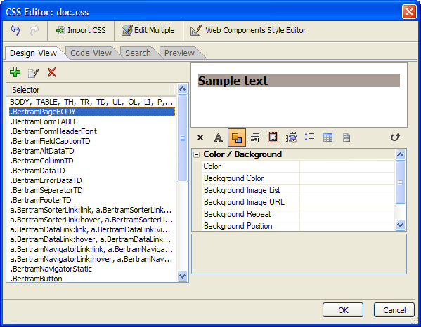
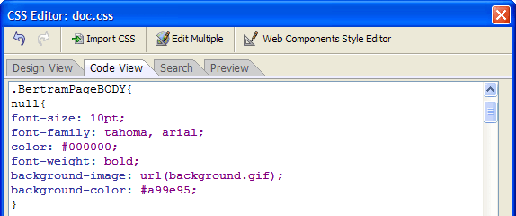
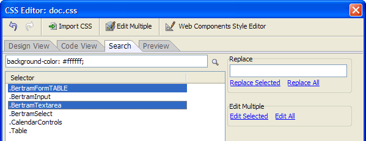
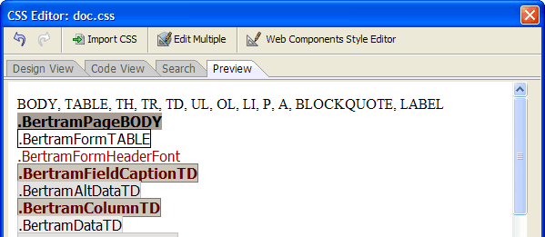

CSS Editor
The CSS Editor allows you to create and edit cascading style sheets. The capbilities of the CSS Editor include:
Two editing modes - You may edit using the visual builder or directly edit the CSS definition.
Import CSS from one CSS file into another - This feature allows you to import the definition of a CSS selector into a corresponding selector in the current file. After an import, the number of CSS selectors in the current CSS file is unchanged.
Merge two CSS files - After merge, the number of CSS selectors in the current file is equal to the number of selectors in the external file plus the number of selectors in the current file (minus duplicate CSS selector names).
Edit Multiple CSS Selectors at once - Options include: change all attributes, change only attributes that are common to the selected Selectors
Search and replace any CSS attribute
Detect and edit Webform Cascading Style Sheets
Multiple access points - Open the CSS style builder from the Web Projects Control Panel (to edit CSS style files), from the HTML Editor (to edit either style files, or embedded CSS definitions), or from the Code Editor.

The Design View Tab of the CSS Editor
To create a new cascading style sheet.
From the Web Projects Control Panel.
Click New to display the New File dialog.
Select CSS Style Sheet and click OK to display the Save Style Sheet dialog.
Enter the name of the new style sheet into the File name control and click Save to display the CSS Editor.
From the Code Editor, select Code > More Genies > CSS Style Sheet Builder... .
From the HTML Editor, select Format > Edit Style Sheet(s)... .
Copying an Existing Style Sheet
To base on new style sheet on an existing style sheet.
Click Import CSS.
Select Append and click OK.
Navigate to the folder that contains the style sheet.
Select the style sheet and click Open.
There are many types of styles that you may add to a cascading style sheet.
Element - select any of the defined set of CSS elements, such as ,
, , etc. Element + Pseudo Class - select any of the defined set of CSS elements and combine it with any of the defined set of pseudo classes
Class - define the name of a new class
Class + Pseudo Class - define the name of a new class and combine it with any of the defined set of pseudo classes
ID - define the name of a new ID
ID + Pseudo Class - define the name of a new ID and combine it with any of the defined set of pseudo classes
 Note : Each ID
or ID + Pseudo class used in a style sheet and
on a page must be unique. In contrast, you may use elements and classes
multiple times in a style sheet and on page.Note : When a style
is defined multiple times in a style sheet, the last instance (closest
to the bottom) in the style sheet overrides all previous instances.
Note : Each ID
or ID + Pseudo class used in a style sheet and
on a page must be unique. In contrast, you may use elements and classes
multiple times in a style sheet and on page.Note : When a style
is defined multiple times in a style sheet, the last instance (closest
to the bottom) in the style sheet overrides all previous instances.To add a new style:
Click
 to display the New Selector window.
to display the New Selector window.If you want the style based on an element:
Display the Element tab.
Select the base tag from the Element list.
Optionally, select a modifier from the Pseudo Class list.
If you want the style based on a class:
Display the Class tab.
Enter the class name into the Name control.
Optionally, select a modifier from the Pseudo Class list.
If you want the style based on an ID:
Display the ID tab.
Enter the ID name into the ID control.
Optionally, select a modifier from the Pseudo Class list.
If you wish to create the new style in a less structured manner:
Display the Code tab.
Click Insert > Elements and select an element.
Click Insert > Pseudo Classes and select an pseudo class.
Optionally, add syntax elements by selecting Insert > Special and selecting one of the following:
Class
Separator
Any Tag
ID
Repeat steps 5a to 5d as necessary.
Click Add.
After a style exists, you may edit it in several different ways.
By modifying its properties on the <span class=Screen>Design View</span> tab
By editing its properties on the Code View tab
By searching for and replacing style attributes on the Search tab
By searching for style attributes on the Search tab and editing them in the <span class=Screen>Style Editor</span>

The Code View Tab of the CSS Editor
Modifying Properties on the Design View Tab
To modify a style:
Display the <span class=Screen>Design View</span> tab.
Select the style from the list.
Modify the properties displayed in the right-hand window.
You may filter the contents of the right-hand window with these buttons:
Button
Description
Display all styles.

Display only font styles.
Display only color and background styles.
Display only text styles.
Display only visual formatting, positioning, and size styles.
Display only border, padding, and margin styles.
Display only list and generated content styles.
Display only table styles.
Display only page media styles.

Hide all properties.
Using the Search Tab
You may use the Search tab to:
Find and replace attributes of the style sheet
Find and edit attributes of the style sheet
Finding and Replacing Style Attributes
To find styles that contain an attribute:
Display the Search tab.
Enter the attribute into the Search control.
Click .
To replace attributes:
Select one or more styles that you wish to change.
Enter the replacement text into the Replace control.
Click Replace Selected.
Optionally, click Replace All to replace this attribute wherever it may be found.

The Search Tab of the CSS Editor
To edit attributes:
Optionally, click Edit Multiple .
Optionally:
Display the Search tab.
Select one or more styles that you wish to change.
Click Edit Selected.
Optionally, click Edit All to replace this attribute wherever it may be found.
When the <span class=Screen>Edit Styles Mode</span> dialog appears, select one of the following options:
"Make Same As..."
"Combine - Override Duplicate Attributes"
"Combine - Keep Duplicate Attributes"
Make the style changes you want in the <span class=Screen>Style Editor</span> and click OK.
Understanding the Edit Styles Mode
Assume that you have selected two selectors for editing which are defined as:
.S1 {color:red; font-size:12pt;}
.S2 {color:blue; font-family:Arial;}
Assume that you set the following attributes in the <span class=Screen>Style Editor</span> :
color:black
border: 1px solid black;
If you choose "MakeSameAs", the results would be:
.S1 {color:black; border: 1px solid black;}
.S2 {color:black; border: 1px solid black;}
The existing style definitions for the selected selectors are discarded and replaced by the new style definition.
If you choose "Combine - Overwrite duplicate attributes", the results would be:
.S1 {color:black; font-size:12pt; border: 1px solid black;}
.S2 {color:black; font-family:Arial; border: 1px solid black;}
The attribute(s) found in both the style sheet and set in the Style Editor (in this case "color") are set to the value(s) selected in the Style Editor. All new attributes are added to each of the selected styles.
If you choose ''Combine - Keep duplicate attributes", the results would be:
.S1 {color:red; font-size:12pt; border: 1px solid black;}
.S2 {color:blue; font-family:Arial; border: 1px solid black;}
The common attribute(s) (in this case "color") their original values, and the new attributes set in the Style Editor (in this case "border") are added to each of the selected styles.
Display the Preview tab to see the font, background, and border attributes of the styles in your style sheet.

The Preview Tab of the CSS Editor
Using the Web Components Style Editor
If you style sheet has all the required styles for a web component style sheet, when you click Web Components Style Editor, the Webform Style Editor will appear.
New CSS Style Builder V11.Limitations
Desktop applications only.
See Also